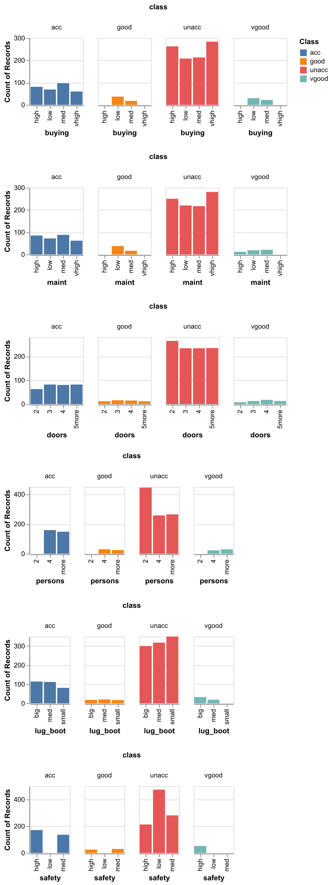
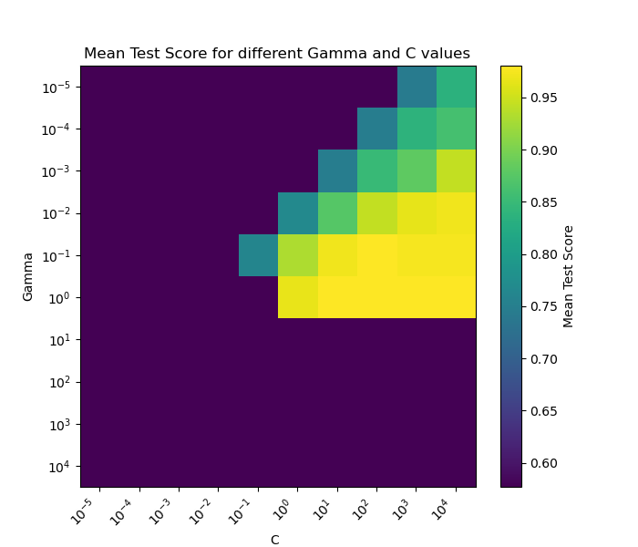

| Model | Mean train score | SD train score | Mean CV score | SD CV score |
|---|---|---|---|---|
| Dummy | 0.7 | 0 | 0.7 | 0.001 |
| Decision Tree | 1 | 0 | 0.97 | 0.009 |
| KNN | 0.97 | 0.003 | 0.943 | 0.01 |
| SVM RBF | 0.971 | 0.004 | 0.952 | 0.018 |
| Naive Bayes | 0.711 | 0.002 | 0.708 | 0.004 |
| Logistic Regression | 0.838 | 0.007 | 0.834 | 0.019 |
Predicing Level of Acceptability of Cars using Machine Learning
Summary
In this project, we attempt to predict the level of acceptability of cars by building a machine learning model in Python (Van Rossum and Drake 2009). To choose the best model for this task, we utilised several common machine learning models, and found out that the SVM RBF classifier achieved the best train and cross-validation scores, with a test accuracy of 0.952. On the 346 test data cases, it correctly predicted the targets of 343 examples, while there were only 3 examples with incorrect predicted targets.
The SVM RBF model also showed exceptional ability in determining the acceptability of cars as seen in the confusion matrix, classification reports, and relatively high scores for precision, recall and F1. However, a slight decrease in classification precision was observed for the “good” category, together with a relatively lower recall score of 0.86 that indicates occasional classification errors. Nonetheless, the results obtained from this analysis further exemplifies the ability of the SVM RBF model in handling nonlinear decision boundaries. This makes the SVM RBF model a solid choice for this project.
Introduction
The Car Evaluation Dataset was created as part of efforts to understand the factors that affect the acceptability of cars among consumers. These factors include buying price of a car, maintenance costs, passenger and luggage capacity, and safety. The goal of this project is to develop a machine learning model that can evaluate the quality of a car based on its attributes to help buyers make a more informed decision for their next car purchase.
Methods
Data
The dataset that was used in this project is of Car Evaluation Database (Bohanec 1988) created by the efforts of M. Bohanec in the late 1980s. It is sourced from the UCI Machine Learning Repository and is publicly available for research.
Each row in the dataset details a car’s attributes (each feature is of categorical data type with several levels), which includes:
- Buying price:
low,med,high,vhigh - Maintenance cost:
low,med,high,vhigh - Number of doors:
2,3,4,5more - Seating capacity:
2,4,more - Boot size:
small,med,big - Safety rating:
low,med,high
Exploratory Data Analysis
Exploratory data analysis was carried out on the train dataset. From Figure 1, we can see the counts of records by target and category was visualised to gain a better idea of the dataset.

Through this analysis, we can see that examples with target class unacceptable represent a large proportion of the dataset.
Preprocessing of Dataset for Machine Learning
We preprocess the dataset to prepare it for machine learning:
- Transform categorical features using
OrdinalEncoderfrom scikit-learn - Split the dataset into training and testing sets
Model Selection
The core of this project is choosing the appropriate machine learning model. Thus, several machine learning models from scikit-learn (Pedregosa et al. 2011) will be evaluated using cross-validation. The models evaluated are:
DummyClassifier(Dummy), which serves as a baseline to compare the performance of other models,DecisionTreeClassifier(Decision Tree),KNeighboursClassifier(KNN),SVCwith RBF kernel (SVM RBF),- Naive Bayes using
MultinomialNB(Naive Bayes), and LogisticRegression(Logistic Regression).
The results of the model selection is shown in Table 1. According to the results, SVM RBF achieved high train and cross-validation scores of 0.971 and 0.952 respectively, suggesting it is the best model for generalising unseen data.
While the Decision Tree model yielded the best train and cross-validation scores, the perfect train score suggests that the model has overfitted to the data. Therefore, we will be using SVM RBF for this project.
Model Optimisation
With the best model identified, the next step was to improve its performance through hyperparameter optimization. Using RandomizedSearchCV, a range of values for the SVM’s hyperparameters C and gamma were explored. This approach allowed for an efficient and thorough search across the parameter space, and results in an optimal esitimator to use.
The visualizations below, including a heatmap (Figure 2) of test scores obtained during hyperparameter optimization. This interpretability aids in understanding which parameters are most critical and how sensitive the model is to these settings.

We observed that the best hyperparameter of C and gamma are 100.0 and 0.1 respectively. All categorical features were passed through OrdinalEncoder prior to model fitting. The Python programming language (Van Rossum and Drake 2009) and the following Python packages were used to perform the analysis: numpy (Harris et al. 2020), Pandas (McKinney 2010), matplotlib (Hunter 2007), scikit-learn (Pedregosa et al. 2011). The code used to perform the analysis and create this report can be found here: https://github.com/UBC-MDS/Car_Evaluation_Analysis/blob/main/scripts
Results & Discussion
After performing hyperparameter optimisation, the SVM RBF model manage to achieve the best score of 0.99 on the test. This suggests the model has been generalised well, with high scores on both the train and test sets.
To further improve the model’s utility, several changes can be made. One such change is feeding the model with features that are not just categorical. Instead, for features such as buying price, maintenance cost and safety features, numeric data should be used. At the same time, more features can be included, such as the type of car and and fuel efficiency ratings.
By allowing the model to take in more complex data, this may allow the model to make more accurate predictions to let customers make a more informed choice when purchasing a new car.
References
Bohanec, Marko. 1988. “Car Evaluation.” UCI Machine Learning Repository.
Harris, Charles R., K. Jarrod Millman, Stéfan J. van der Walt, Ralf Gommers, Pauli Virtanen, David Cournapeau, Eric Wieser, et al. 2020. “Array Programming with NumPy.” Nature 585 (7825): 357–62. https://doi.org/10.1038/s41586-020-2649-2.
Hunter, J. D. 2007. “Matplotlib: A 2D Graphics Environment.” Computing in Science & Engineering 9 (3): 90–95. https://doi.org/10.1109/MCSE.2007.55.
McKinney, Wes. 2010. “Data Structures for Statistical Computing in Python.” In Proceedings of the 9th Python in Science Conference, edited by Stéfan van der Walt and Jarrod Millman, 56–61. https://doi.org/ 10.25080/Majora-92bf1922-00a .
Pedregosa, F., G. Varoquaux, A. Gramfort, V. Michel, B. Thirion, O. Grisel, M. Blondel, et al. 2011. “Scikit-Learn: Machine Learning in Python.” Journal of Machine Learning Research 12: 2825–30.
Van Rossum, Guido, and Fred L. Drake. 2009. Python 3 Reference Manual. Scotts Valley, CA: CreateSpace.